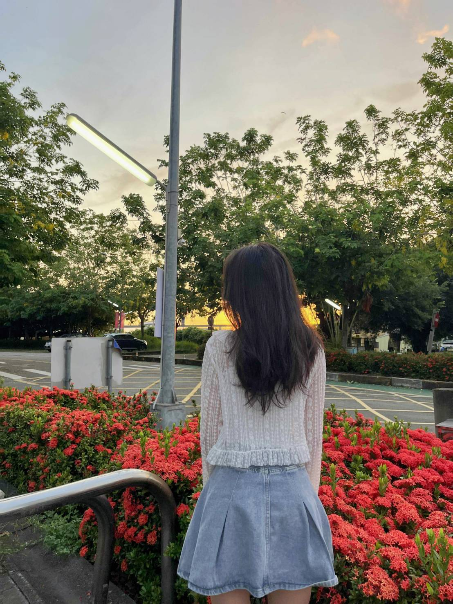
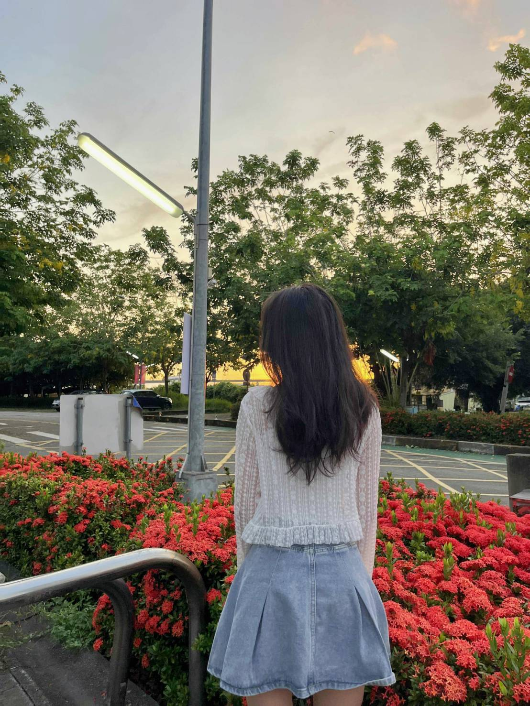

許玉麗

學號：114011122
學校：亞洲大學
科系：建管系
班級：1P
電話：0970118595
Email：huangocle.04032006@gmail.com
自我介紹
我是亞洲大學一年級建管系學生（學號114011122）。我有興趣於烹飪，因此希望能找到與此相關的工作以學習並培養這項興趣。
目前有在全聯與麵店的工作經驗，累積了團隊合作與服務經驗。
語言能力
- 越南語（母語）
- 中文（良好）
興趣
閱讀、聽音樂、玩遊戲
學號：114011122
學校：亞洲大學
科系：建管系
班級：1P
電話：0970118595
Email：huangocle.04032006@gmail.com
我是亞洲大學一年級建管系學生（學號114011122）。我有興趣於烹飪，因此希望能找到與此相關的工作以學習並培養這項興趣。
目前有在全聯與麵店的工作經驗，累積了團隊合作與服務經驗。
閱讀、聽音樂、玩遊戲